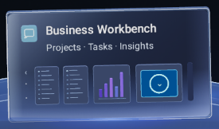
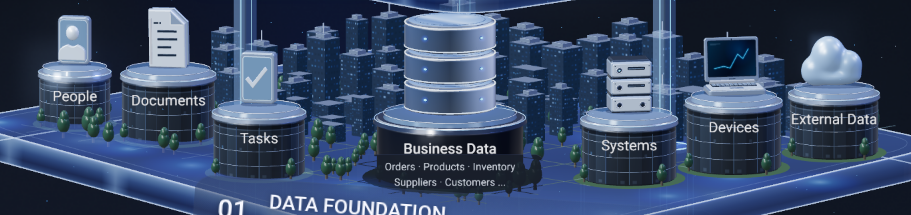
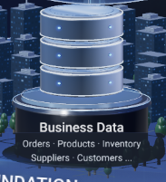
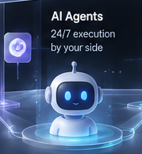
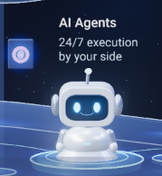
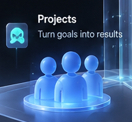
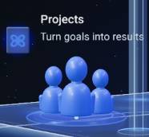

Static design PNG vs PR candidate
Left: exact crop from assets/reference.png using each asset's canonical referenceRect. Right: PR candidate crop from the same pixel rectangle. No registration, scaling, warping, or camera fitting.
app.workbench
Business Workbench
STATIC DESIGN PNG
PR AFTER

city.business
Business City
STATIC DESIGN PNG
PR AFTER

data.business-data
Business Data
STATIC DESIGN PNG
PR AFTER

actor.ai-agents
AI Agents
STATIC DESIGN PNG

PR AFTER

actor.projects
Projects
STATIC DESIGN PNG

PR AFTER
